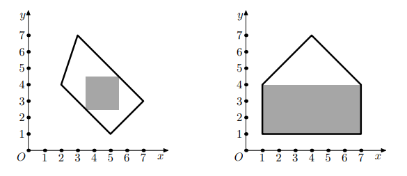
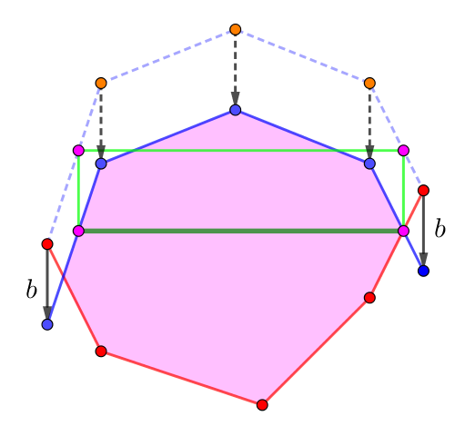

给定一个凸多边形，求一个面积最大的，在凸多边形内部且边平行于坐标轴的矩形。
第一行包含一个正整数 $n$ ($3 \leq n \leq 10^5$)，表示凸多边形的点数。
接下来 $n$ 行，每行两个整数 $x_i, y_i$ ($-10^9 \leq x_i, y_i \leq 10^9$)，以逆时针的顺序描述多边形各个点的坐标。
输出一行，包含四个实数 $x_\min, y_\min, x_\max, y_\max$，分别表示矩形左下角顶点和右上角顶点的坐标。
你需要保证矩形的四个顶点在凸多边形内或距离凸多边形某条边的距离不超过 $10^{-5}$。
设 $A = \left( x_\max - x_\min \right) \left( y_\max - y_\min \right)$，则答案被认为正确当且仅当 $A$ 与面积最大值的相对或绝对误差不超过 $10^{-5}$。
设矩形的长为 $a$，宽为 $b$ (这里规定 $x_\max - x_\min$ 为长，$y_\max - y_\min$ 为宽)。考虑对于一个固定的宽度 $b$ ($0 \leq b \leq \left( \max y_i - \min y_i \right)$)，长的最大值为 $a = a \left( b \right)$，于是面积等于 $b \cdot a \left( b \right)$，我们的目标就是求 $b \cdot a \left( b \right)$ 的最大值。
先考虑如何求 $a \left( b \right)$。
我们将凸包分成上凸包和下凸包。显然在最优解中，$\left( x_\min, y_\min \right), \left( x_\max, y_\min \right)$ 之一在下凸包上，$\left( x_\min, y_\max \right), \left( x_\max, y_\max \right)$ 之一在上凸包上。
因此如果我们将上凸包整体向下平移 $d$ 个单位，于是 $y = y_\max$ 就会平移到 $y = y_\min$，因此这个矩形就转化为了新凸形 (粉色区域) 中的一条线段，如下图：
于是我们只需要求凸形中平行于 $x$ 轴的线段的长度的最大值。由凸形的凸性知这个长度关于 $y$ 是上凸函数，因此三分或二分 (单侧) 导数即可。
(ps: 凸函数不一定可导，但一定单侧可导。因此我们可以二分其单侧导数 (如右导数)，找到 $x_0$ 使得它是右导数正负的分界点 (注意右导数不一定有零点)，则这个分界点一定是凸函数的极值点)
求出 $a \left( b \right)$ 后，考虑求 $\max\limits_{0 \leq b \leq B} b \cdot a \left( b \right)$。
事实上，我们可以证明 $a \cdot f \left( b \right)$ 是一个上凸函数。为此，我们先要用一个引理：
若 $f \left( x \right)$ 是单调递增的凸函数，则 $x \cdot f \left( x \right)$ 也是单调递增的凸函数。
(ps: 注意凸函数不一定蕴含导数存在，因此不能使用导数证明)
显然 $F \left( x \right) = x \cdot f \left( x \right)$ 单调递增。任取 $x_1 < x_2$ 和 $0 < \lambda < 1$，则 \begin{align*} \left( 1 - \lambda \right) F \left( x_1 \right) + \lambda F \left( x_2 \right) - F \left( \left( 1 - \lambda \right) x_1 + \lambda x_2 \right) &= \left( 1 - \lambda \right) \left( x_1 f \left( x_1 \right) \right) + \lambda \left( x_2 f \left( x_2 \right) \right) - \left( \left( 1 - \lambda \right) x_1 + \lambda x_2 \right) f \left( \left( 1 - \lambda \right) x_1 + \lambda x_2 \right) \\ &\geq \left( 1 - \lambda \right) \left( x_1 f \left( x_1 \right) \right) + \lambda \left( x_2 f \left( x_2 \right) \right) - \left( \left( 1 - \lambda \right) x_1 + \lambda x_2 \right) \left[ \left( 1 - \lambda \right) f \left( x_1 \right) + \lambda f \left( x_2 \right) \right] \\ &= \lambda \left( 1 - \lambda \right) \left( x_2 - x_1 \right) \left( f \left( x_2 \right) - f \left( x_1 \right) \right) \\ &\geq 0 \end{align*}
即 $F \left( x \right)$ 凸。
下面证明，$- a \left( x \right)$ 是单调递增的 (下) 凸函数，等价地，$a \left( x \right)$ 是单调递减的上凸函数。
(ps: 下面是对一般凸形的证明)
显然 $a \left( x \right)$ 单调递减。
取 $x_0 \in \left[ 0, B \right]$，设 $PQ$ 为此时平行于 $x$ 轴的线段的长度最大值。
不妨设 $P$ 在上凸包上，$Q$ 在下凸包上 (ps: 注意交点既可以看成在上凸包上也可以看成在下凸包上，此时两点不可能同时都在上凸包或下凸包上)，记此时 $P, Q$ 共同的纵坐标为 $y \left( x \right)$。
我们考虑当 $x$ 增加时，下凸包不动，上凸包下移。显然 $y \left( x \right)$ 随着 $x$ 的增大单调递减。
取 $\delta > 0$，记 $x_1 = x, x_2 = x + \delta, y_i = y \left( x_i \right)$ ($i = 1, 2$)。则 $$ y_2 \in \left[ y_1 - \delta, y_1 \right] $$
设 $P$ 局部的凸包对应的函数为 $x = \alpha \left( y \right)$，$Q$ 局部的凸包对应的函数为 $x = \beta \left( y \right)$，则 $\alpha$ 是递增的下凸函数, $\beta$ 是递增的上凸函数，且 $$ a \left( x_1 \right) = - \alpha \left( y_1 \right) + \beta \left( y_1 \right) $$ $$ a \left( x_2 \right) = - \alpha \left( y_2 + \delta \right) + \beta \left( y_2 \right) $$
从而 $$ a \left( x_2 \right) - a \left( x_1 \right) = - \left[ \alpha \left( y_2 + \delta \right) - \alpha \left( y_1 \right) \right] + \left[ \beta \left( y_2 \right) - \beta \left( y_1 \right) \right] $$
下面在增加 $\alpha \left( y \right), \beta \left( y \right)$ 可导的条件下完成证明。如果 $\alpha, \beta$ 不可导，则因为凸函数存在左右导数，只需更细致地讨论即可，这里省略这一过程。
由于 $a \left( x_1 \right)$ 的极值性，由 Fermat 引理知 $\alpha' \left( y_1 \right) = \beta' \left( y_1 \right) \overset {\operatorname{def}} = k$。
由导数的性质，知 \begin{align*} a \left( x_2 \right) - a \left( x_1 \right) &= - \left[ \left( y_2 + \delta - y_1 \right) \alpha' \left( y_1 \right) + o \left( y_2 + \delta - y_1 \right) \right] + \left[ \left( y_2 - y_1 \right) \beta' \left( y_1 \right) + o \left( y_2 - y_1 \right) \right] \\ &= \left( y_1 - y_2 - \delta \right) k + o \left( \delta \right) + \left( y_2 - y_1 \right) k + o \left( \delta \right) \\ &= - k \cdot \delta + o \left( \delta \right) \end{align*}
由导数的定义知 $a' \left( x \right) = -k$。
而对于一个局部 $x_1 < x_2$，有 $y \left( x_1 \right) \geq y \left( x_2 \right)$，从而 $\beta' \left( y \left( x_1 \right) \right) \leq \beta' \left( y \left( x_2 \right) \right)$，即 $a' \left( x_1 \right) \geq a' \left( x_2 \right)$。
综上，$a \left( x \right)$ 是上凸函数。
因此 $a \cdot f \left( b \right)$ 是上凸函数，和之前一样再套一层三分或二分 (单侧) 导数即可。
时间复杂度 $O \left( \log^2 W \log n \right)$ ($W$ 是权值范围)，当然三分可以改成黄金分减少常数。
#include <bits/stdc++.h>
using std::cin;
using std::cout;
const int N = 100054;
const double phi = 0.6180339887498948482;
struct info {
double x, d;
info (double x_coor = 0., double derivative = 0.) : x(x_coor), d(derivative) {}
};
struct vec2 {
int x, y;
vec2 (int x0 = 0, int y0 = 0) : x(x0), y(y0) {}
friend std::istream & operator >> (std::istream &in, vec2 &B) {return in >> B.x >> B.y;}
inline bool operator < (const vec2 &B) const {return x < B.x || (x == B.x && y < B.y);}
} p[N], lower[N], upper[N];
int n, nl, nu, al, au, bl, bu;
int H, y_min = INT_MAX, y_max = INT_MIN;
int xs[N];
inline void up(int &x, const int y) {x < y ? x = y : 0;}
inline void down(int &x, const int y) {x > y ? x = y : 0;}
inline bool cmp_y_p(const vec2 &A, const vec2 &B) {return A.y < B.y || (A.y == B.y && A.x < B.x);}
inline bool cmp_y_n(const vec2 &A, const vec2 &B) {return A.y > B.y || (A.y == B.y && A.x < B.x);}
void solve_lower(double h, info *L, info *R) {
int pos; double der;
if (lower->y <= h) *L = info(-lower->x, 0);
else
pos = std::lower_bound(lower, lower + al, vec2(INT_MIN, (int)floor(h)), cmp_y_n) - lower,
assert(0 < pos && pos <= al),
der = -double(lower[pos].x - lower[pos - 1].x) / (lower[pos].y - lower[pos - 1].y),
*L = info(-lower[pos].x + der * (h - lower[pos].y), der);
if (lower[nl - 1].y <= h) *R = info(lower[nl - 1].x, 0);
else
pos = std::upper_bound(lower + bl, lower + nl, vec2(INT_MAX, (int)floor(h)), cmp_y_p) - lower - 1,
assert(bl - 1 <= pos && pos < nl - 1),
der = double(lower[pos + 1].x - lower[pos].x) / (lower[pos + 1].y - lower[pos].y),
*R = info(lower[pos].x + der * (h - lower[pos].y), der);
}
void solve_upper(double h, info *L, info *R) {
int pos; double der;
if (h < upper->y) *L = info(-upper->x, 0);
else
pos = std::upper_bound(upper, upper + au, vec2(INT_MAX, (int)floor(h)), cmp_y_p) - upper - 1,
assert(0 <= pos && pos < au),
der = -double(upper[pos + 1].x - upper[pos].x) / (upper[pos + 1].y - upper[pos].y),
*L = info(-upper[pos].x + der * (h - upper[pos].y), der);
if (h < upper[nu - 1].y) *R = info(upper[nu - 1].x, 0);
else
pos = std::lower_bound(upper + bu, upper + nu, vec2(INT_MIN, (int)floor(h)), cmp_y_n) - upper,
assert(bu - 1 < pos && pos < nu),
der = double(upper[pos].x - upper[pos - 1].x) / (upper[pos].y - upper[pos - 1].y),
*R = info(upper[pos].x + der * (h - upper[pos].y), der);
}
inline double f(double height, bool output = false) {
double L = y_min, R = y_max - height, M; info Li[3], Ri[3];
for (; R - L > 1e-9; ) {
M = (L + R) * .5;
if (M == L || M == R) break;
solve_lower(M, Li + 1, Ri + 1);
solve_upper(M + height, Li + 2, Ri + 2);
*Li = (Li[1].x < Li[2].x ? Li[1] : Li[2]);
*Ri = (Ri[1].x < Ri[2].x ? Ri[1] : Ri[2]);
Li->d + Ri->d <= 0 ? R = M : L = M;
}
if (output)
M = (L + R) * .5,
solve_lower(M, Li + 1, Ri + 1),
solve_upper(M + height, Li + 2, Ri + 2),
*Li = (Li[1].x < Li[2].x ? Li[1] : Li[2]),
*Ri = (Ri[1].x < Ri[2].x ? Ri[1] : Ri[2]),
cout << -Li->x << ' ' << M << ' ' << Ri->x << ' ' << M + height << '\n';
return height * (Li->x + Ri->x);
}
int main() {
int i; vec2 *I, *lm, *rm, *pn; double L, R, d, mL, mR, fL, fR;
std::ios::sync_with_stdio(false), cin.tie(NULL);
cin >> n, pn = p + n;
for (i = 0; i < n; ++i) cin >> p[i], up(y_max, p[i].y), down(y_min, p[i].y);
std::reverse(p, pn), std::tie(lm, rm) = std::minmax_element(p, pn), H = y_max - y_min;
for (I = lm; I != rm; ++ I == pn ? I = p : 0) lower[nl++] = *I; lower[nl++] = *I;
for (I = lm; I != rm; --(I == p ? I = pn : I)) upper[nu++] = *I; upper[nu++] = *I;
for (al = 0; al < nl && lower[al ].y != y_min; ++al);
for (bl = nl; bl > 0 && lower[bl - 1].y != y_min; --bl);
for (au = 0; au < nu && upper[au ].y != y_max; ++au);
for (bu = nu; bu > 0 && upper[bu - 1].y != y_max; --bu);
L = 0, R = H, d = H * phi, fL = f(mL = R - d), fR = f(mR= L + d);
for (; d > 1e-9; )
if (d *= phi, fL < fR)
L = mL, mL = mR, fL = fR, fR = f(mR = L + d);
else
R = mR, mR = mL, fR = fL, fL = f(mL = R - d);
return cout.precision(24), f((L + R) * .5, true), 0;
}
坑1：注意权值范围较大，因此在较大范围内用较小的 eps 二分 (或三分) 时可能会死循环。此时应该判定如果 M = (L + R) * .5 算出来后有 M == L || M == R 则直接 break。
坑2：注意 double 强制转 int 是向 $0$ 取整，如果要向下取整则需手动 floor。
坑3：要统一使用右导数或左导数，否则边界会发生错误。
坑4：输出的点坐标的判定是绝对误差，因此要多输出几位小数。